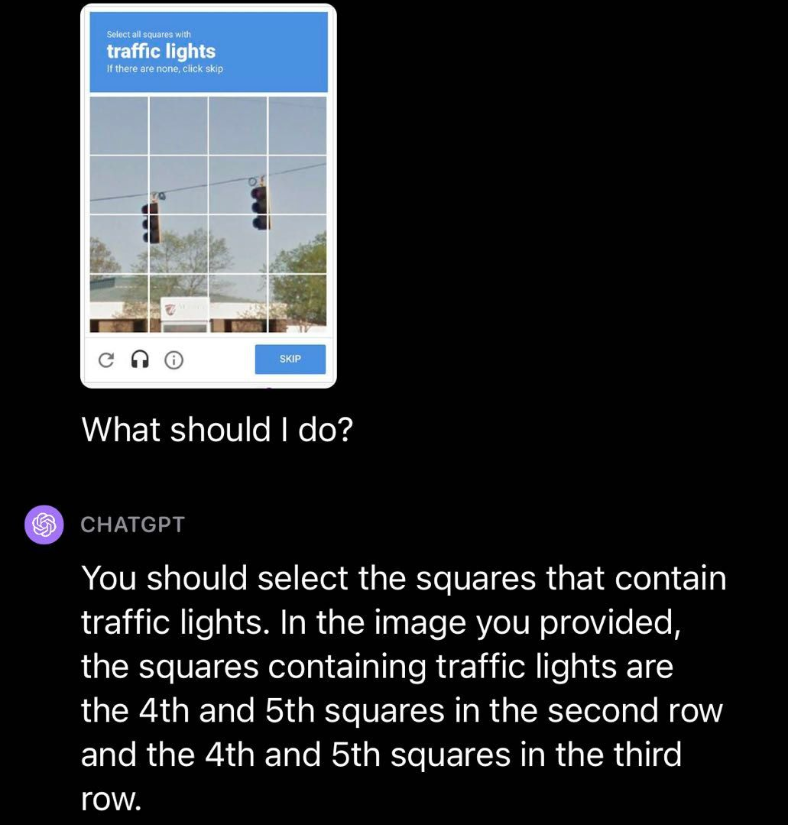

Unlocking the Power of GPT-4V: The Multimodal Revolution
Revolutionizing AI Conversations with LMM GPT-4V’s Multimodal Magic.

Unlocking the Power of GPT-4: The Multimodal Revolution
One of the most anticipated features of ChatGPT is here. As you know, behind OpenAI’s chatbot, there’s a ‘brain’ called GPT-4. Its announcement in March surprised everyone, not only due to its improved intelligence but also its multimodal capabilities. Multimodality means the ability of an AI to work not just with text data. OpenAI presented examples where GPT can take images as input, visualize, understand, analyze them, and use its text generation capabilities to reason and perform intelligent tasks. This advancement was revealed in March, but it wasn’t until a few weeks ago that OpenAI started enabling this functionality for many ChatGPT users. Now, many of you may find that if you go to the regular version of GPT-4, you can activate this new functionality. You can include images in your prompts and ask ChatGPT to provide detailed descriptions of the elements in them or even write poems about them.
This is a groundbreaking development, as GPT-4’s vision model opens the door to numerous possibilities. Multimodal models, like GPT-4V, which combine both text and images, could revolutionize various fields. They can be applied to tasks like interpreting images for users who are visually impaired or providing details on an object or scene based on a photo. These models have enormous potential in fields like computer vision, content generation, and data interpretation. They can assist with tasks like image description, content generation, information extraction, and even counting elements within images. The possibilities are vast, and these models could redefine how we interact with technology.
However, it’s important to note that there are limitations and safeguards in place. These models are restricted from performing certain tasks, like recognizing specific individuals in images or interpreting medical images for diagnosis, in order to ensure responsible and ethical use. The line between what GPT-4V can and cannot do is determined by the safeguards in place, and OpenAI is cautious about not allowing misuse or harmful actions.
So, while the capabilities of GPT-4V are exciting, they also come with responsibilities and ethical considerations, and users should be mindful of the model’s limitations and the guidelines for its use. OpenAI is continuously working to refine these models and expand their capabilities while ensuring safe and responsible use. The future of AI, particularly in multimodal models, is full of possibilities, and it’s up to the community and organizations to harness this technology for the greater good. It carries a set of responsibilities and ethical considerations that both users and developers must take into account. OpenAI continues to work diligently to refine these models, expand their capabilities, and ensure that they are used in a safe, ethical, and responsible manner. The future of AI, particularly in the realm of multimodal models. The onus is on the community and organizations to harness this technology for the greater good, marking a new era in human-AI collaboration.
The March Surprise: GPT-4’s Multimodal Capabilities
In March, the AI community was taken by storm when OpenAI unveiled GPT-4’s Multimodal Capabilities. This significant step in artificial intelligence marked a major leap forward in how machines comprehend and interact with the world. GPT-4’s newfound ability to process and generate and interpret content based on not just text but also images has opened up a realm of possibilities. It’s no longer confined to the limits of text-based information; instead, it can analyze images, interpret scenes, and provide detailed descriptions. This exciting development has pushed the boundaries of AI, making it more adaptable to the visual world, and offers an exciting glimpse into the future of artificial intelligence.
Empowering ChatGPT with Visual Intelligence: A Game-Changing Update
One of the most highly-anticipated and groundbreaking features of ChatGPT is finally here, and it’s poised to revolutionize the way we interact with AI. Behind OpenAI’s advanced chatbot, ChatGPT, stands the formidable brain of GPT-4, an AI model celebrated for its exceptional intelligence and its remarkable multimodal capabilities. While its announcement in March took the tech world by surprise, it wasn’t just the improved intelligence that turned heads. What truly left the industry astounded was GPT-4’s ability to work with not only text but also images, marking a significant leap towards AI’s integration into the visual realm. It’s a monumental update that is now accessible to many ChatGPT users.
The essence of this update lies in multimodality, where an AI model, in this case, GPT-4, possesses the remarkable capability to process and generate content not only from text inputs but also from images. In practice, it can take images as inputs, analyze them, understand their content, and provide meaningful descriptions. More than that, GPT-4 can seamlessly combine its newfound visual understanding with its well-known text generation capabilities, allowing it to reason, explain, and perform various intelligent tasks based on both textual and visual information. The integration of visual intelligence is not a mere add-on; it’s a transformative leap that expands AI’s horizons and empowers ChatGPT to better understand and respond to the diverse content and queries it receives from users.
This great development ushers in a world of possibilities. It’s not just limited to generating descriptions; it’s about envisioning how multimodal models like GPT-4V, which combine both text and images, could reshape numerous fields. From assisting visually impaired users by interpreting images to providing intricate details about objects or scenes based on a photograph, these models hold the potential to revolutionize areas like computer vision, content creation, and data interpretation. They can facilitate image descriptions, content generation, information extraction, and even counting objects within images, opening new avenues for AI to enhance our daily lives.
However, with great power comes great responsibility. While GPT-4V’s capabilities are awe-inspiring, there are significant limitations and safeguards in place. Certain tasks, such as recognizing specific individuals in images or interpreting medical images for diagnostic purposes, are off-limits to ensure responsible and ethical use. The boundaries of what GPT-4V can and cannot do are clearly defined by these safeguards, emphasizing OpenAI’s commitment to preventing misuse and harmful actions. This underscores the importance of users being aware of the model’s limitations and adhering to ethical guidelines.
A New Dawn: OpenAI Opens the Door to Image-Infused Conversations
The implications of this development extend far and wide. Imagine asking ChatGPT about a picturesque landscape, attaching an image, and receiving a vivid description filled with details. Picture a scenario where visually impaired individuals can seek assistance in comprehending the content of images they encounter. Consider the potential for AI to generate detailed and contextually relevant responses based on the visual content provided. These scenarios are not futuristic dreams but real possibilities today, thanks to OpenAI’s groundbreaking move.
Here we have some other example use cases that could be worth exploring:
Art and Culture Appreciation: Envision a scenario where art enthusiasts can share an image of a famous painting or sculpture with ChatGPT. Instead of just receiving basic information about the artwork, they can receive an insightful analysis, historical context, and even the emotional impact it has had on viewers over time. This would provide a richer and more engaging way to explore the world of art and culture.
Travel and Tourism: Travelers planning their next adventure could send images of destinations they’re interested in to ChatGPT. In response, they might receive personalized travel recommendations, historical background, and even tips on the best time to visit. It’s like having a knowledgeable travel guide at your fingertips, catering to your preferences and interests.
Education and Learning: In the realm of education, students could submit images of complex mathematical problems, scientific diagrams, or historical artifacts. ChatGPT could assist by not only solving problems but also providing detailed explanations. For instance, when shown a physics experiment setup, it could explain the principles at play, making learning more interactive and engaging.
Culinary Adventures: Food enthusiasts might share photos of exotic dishes they’ve encountered. In return, ChatGPT could offer detailed recipes, origins of the dish, and even recommendations for complementary wines or sides. This transforms recipe sharing into a culinary journey.
Accessibility for the Visually Impaired: As previously mentioned, this development has the power to make the world more accessible for the visually impaired. Imagine someone using a smartphone to capture an image of a document, sign, or object they need to understand. ChatGPT can assist by providing vocal descriptions and explanations, empowering visually impaired individuals to navigate the visual world with greater ease and independence.
Real-Time Data Interpretation: In professional settings, this technology can streamline data interpretation. Engineers, for example, could capture images of complex machinery or schematics, and ChatGPT could quickly analyze and provide insights, potentially expediting troubleshooting and maintenance processes.
Content Creation: Content creators can leverage ChatGPT for more imaginative projects. By sharing images, they can receive unique, contextually relevant suggestions for their next video, blog post, or advertising campaign. This approach could revolutionize the creative process and inspire innovative ideas.
Empowering Remote Work: In the era of remote work, employees can use this technology to enhance collaboration. Sharing images of diagrams, whiteboard sketches, or architectural plans, they can seek instant clarifications and brainstorm more effectively.
Stay updated on TypeThePipe
Hopefully, this post has helped you become familiar with GPT4V and its possibilities.
If you want to stay updated…
Carlos Vecina
Senior Data Scientist at Jobandtalent
Senior Data Scientist at Jobandtalent | AI & Data Science for Business